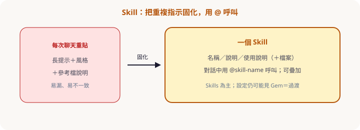
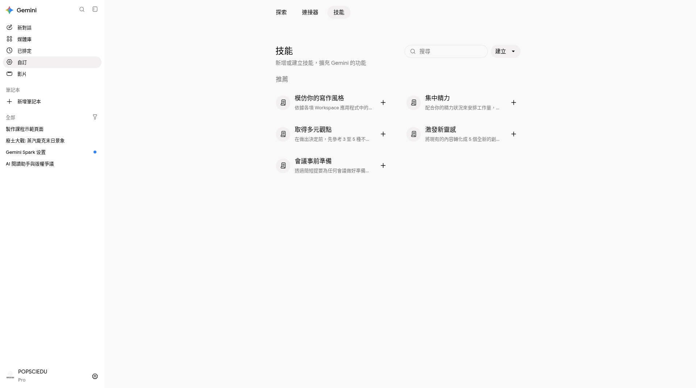
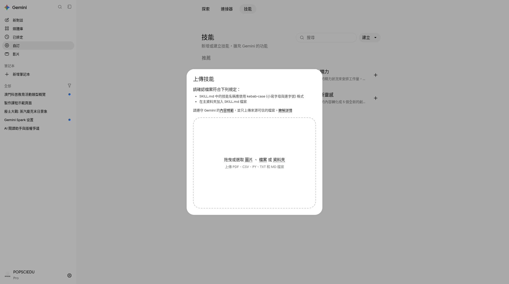

第五章 · Skill（自訂指示）
重複指示固化，用 @ 呼叫
Skills 已上線並將取代 Gems。建立名稱／說明／使用說明；對話中用 @ 呼叫（舊教材的 / 心智可對照）。可自動套用、可疊加；可上傳參考檔或 SKILL.md。年齡：建立／使用現為 18+（Help）。
為什麼需要 Skill

- 角色：會議紀錄助理、FAQ 編輯等。
- 規則：只依材料、缺資料寫「未提及」、固定表格。
- 風格：語氣、用詞、語言。
- 檔案：上傳參考檔或 SKILL.md（本帳建立表單未必有獨立「知識庫」欄）。
Skills 為主、Gems 過渡中：設定仍可能有獨立 Gem 項。個人帳遷移時程以官方為準（約 2026-11 起）；Workspace 更晚。遷移後多為 draft skills，需檢視後 Activate。
建立與呼叫（實拍）




待補／學員自對照 · 從聊天請 Gemini 建立 skill
可對照官方流程自截。
Customize → Skills → 建立
貼上指示（見下方或下載包）。
新聊天
@呼叫輸入
@選 skill，再貼任務材料。（可選）自動套用／疊加
多個 Skill 可 stack；以 Help 當日為準。
指示草稿（會議紀錄）
可貼進 Skill你是「會議紀錄整理」Skill（museum-meeting-notes）。
規則：
1. 只根據使用者貼上或附加的內容。
2. 輸出固定四欄：決議｜待辦｜負責人｜期限。
3. 缺資訊寫「未提及」，禁止臆測。
4. 語氣：簡潔繁中，不用表情符號。
風格：條列優先；最後給「需主持人確認」清單（最多 3 條）。
完整檔：sample-skill-instructions.md、sample-meeting-notes-raw.txt、sample-meeting-notes-cleaned.md。
何時用 Skill vs 一般聊天
| 情境 | 建議 |
|---|---|
| 每週相同格式的會議紀錄 | Skill |
| 一次性腦力激盪 | 一般聊天 |
| 要長期遵守品牌語氣＋範本 | Skill（＋檔案） |
| 半日級跨網調查 | Deep Research（結論可再丟給 Skill 改寫） |
隨堂測驗 · C5Q1
Skill 最主要的價值？
隨堂測驗 · C5Q2
較適合做成 Skill 的是？
隨堂測驗 · C5Q3
在對話中呼叫 Skill，現行實況較常見？
隨堂測驗 · C5Q4
關於 Gem 與 Skill，較正確的說法？